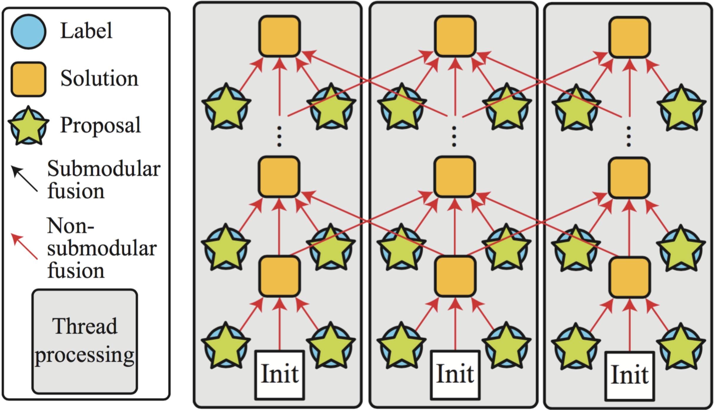

Research Projects
[2016] New project on VR/AR

Newly started project on virtual/augument reality!
[2016] Turning an Urban Scene Video into a Cinemagraph [paper]
We proposed an algorithm that turns a regular video capturing urban scenes into a high-quality endless animation, known as a Cinemagraph. To our knowledge, this work is the first to automatically generate Cinemagraph animations from regular movies in the wild. The created Cinemagraph enables the novel Cinemagraph navigation and virtual advertisement application.
[2016] Multi-way Particle Swarm Fusion [paper]

We proposed a general parallel framework for solving MRF optimization problem. The framework divides the problem into several sub-problems and solves them in parallel. Each worker thread propagates its current solution to other threads after some time, enabling faster convergence.
[2015] Structured Indoor Modeling [paper][project page]
We proposed a novel 3D modeling framework that reconstructs an indoor scene as a structured model from panorama RGBD images. A scene geometry is represented as a graph, where nodes correspond to structural elements such as rooms, walls, and objects. The structured scene representation enables a variety of novel applications, ranging from indoor scene visualization, automated floorplan generation, Inverse-CAD, and more.